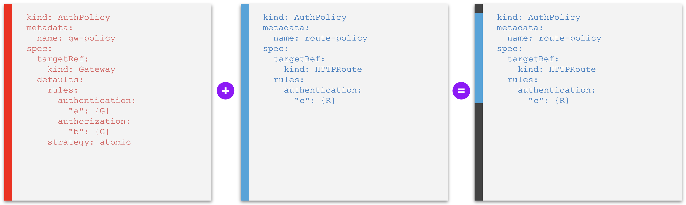
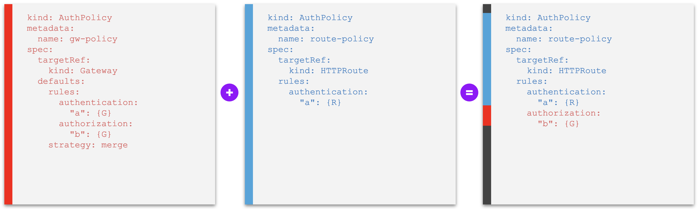
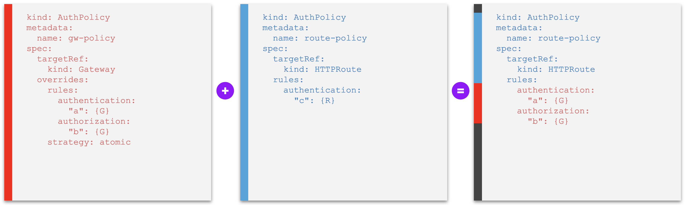
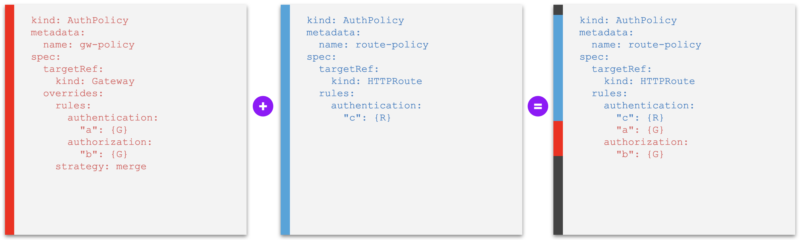
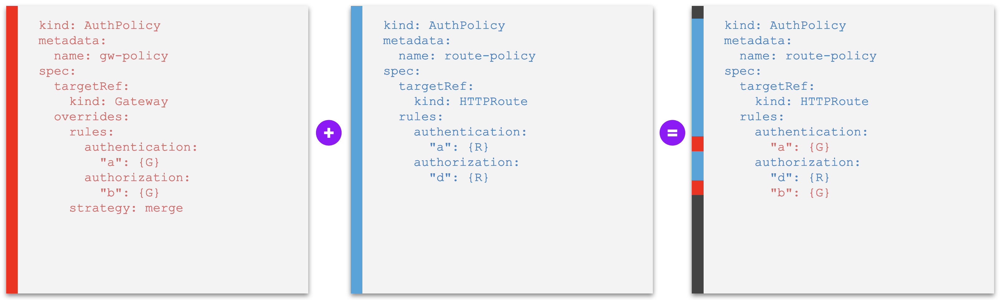
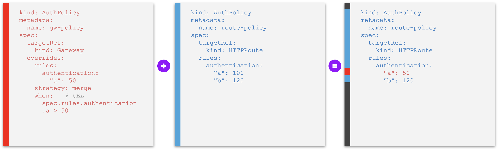
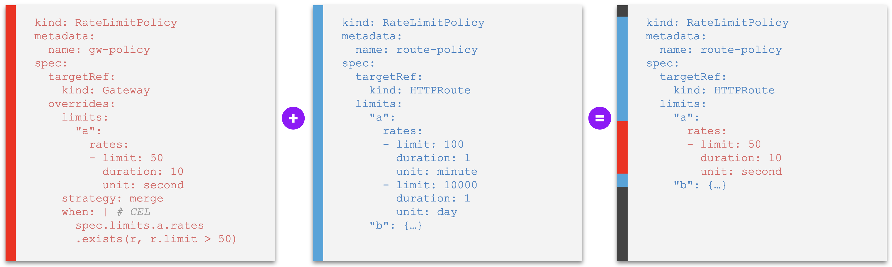
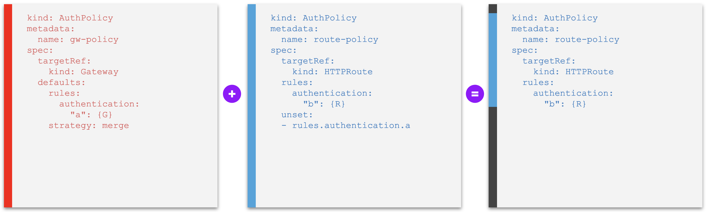
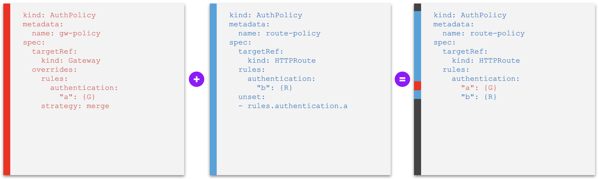

Defaults & Overrides¶
- Feature Name:
defaults-and-overrides - Start Date: 2024-02-15
- RFC PR: Kuadrant/architecture#58
- Issue tracking: Kuadrant/kuadrant-operator#431
Summary¶
This is a proposal for extending the Kuadrant Policy APIs to fully support use cases of Defaults & Overrides (D/O) for Inherited Policies, including the base use cases of full default and full override, and more specific nuances that involve merging individual policy rules (as defaults or overrides), declaring constraints and unsetting defaults.
Motivation¶
As of Kuadrant Operator v0.6.0, Kuadrant policy resources that have hierarchical effect across the tree of network objects (Gateway, HTTPRoute), or what is known as Inherited Policies, provide only limited support for setting defaults and no support for overrides at all.
The above is notably the case of the AuthPolicy and the RateLimitPolicy v1beta2 APIs, shipped with the aforementioned version of Kuadrant. These kinds of policies can be attached to Gateways or to HTTPRoutes, with cascading effects through the hierarchy that result in one effective policy per gateway-route combination. This effective policy is either the policy attached to the Gateway or, if present, the one attached to the HTTRoute, thus conforming with a strict case of implicit defaults set at the level of the gateway.
Enhancing the Kuadrant Inherited Policy CRDs, so the corresponding policy instances can declare defaults and overrides stanzas, is imperative:
- to provide full support for D/O along the lines proposed by GEP-713 (to be superseded by GEP-26491) of the Kubernetes Gateway API special group (base use cases);
- to extend D/O support to other derivative cases, learnt to be just as important for platform engineers and app developers who require more granular policy interaction on top of the base cases;
- to support more sophisticated hierarchies with other kinds of network objects and/or multiples policies targetting at the same level of the hierarchy (possibly, in the future.)
Guide-level explanation¶
Conceptualization and User story¶
The base use cases for Defaults & Overrides (D/O) are:
- Defaults (D): policies declared lower in the hierarchy supersede ones set (as "defaults") at a higher level, or "more specific beats less specific"
- Overrides (O): policies declared higher in the hierarchy (as "overrides") supersede ones set at the lower levels, or "less specific beats more specific"
The base cases are expanded with the following additional derivative cases and concepts:
- Merged defaults (DR): "higher" default policy rules that are merged into more specific "lower" policies (as opposed to an atomic less specific set of rules that is activated only when another more specific one is absent)
- Merged overrides (OR): "higher" override policy rules that are merged into more specific "lower" policies (as opposed to an atomic less specific set of rules that is activated fully replacing another more specific one that is present)
- Constraints (C): specialization of an override that, rather than declaring concrete values, specify higher level constraints (e.g., min value, max value, enums) for lower level values, with the semantics of "clipping" lower level values so they are enforced, in an override fashion, to be the boundaries dictated by the constraints; typically employed for constraining numeric values and regular patterns (e.g. limited sets)
- Unsetting (U): specialization that completes a merge default use case by allowing lower level policies to disable ("unset") individual defaults set a higher level (as opposed to superseding those defaults with actual, more specific, policy rules with proper meaning)
Together, these concepts relate to solve the following user stories:
| User story | Group | Unique ID |
|---|---|---|
| As a Platform Engineer, when configuring a Gateway, I want to set a default policy for all routes linked to my Gateway, that can be fully replaced with more specific ones(*). | D | gateway-default-policy |
| As a Platform Engineer, when configuring a Gateway, I want to set default policy rules (parts of a policy) for all routes linked to my Gateway, that can be individually replaced and/or expanded by more specific rules(*). | DR | gateway-default-policy-rule |
| As a Platform Engineer, when defining a policy that configures a Gateway, I want to set constraints (e.g. minimum/maximum value, enumerated options, etc) for more specific policy rules that are declared(*) with the purpose of replacing the defaults I set for the routes linked to my Gateway. | C | policy-constraints |
| As a Platform Engineer, when configuring a Gateway, I want to set a policy for all routes linked to my Gateway, that cannot be replaced nor expanded by more specific ones(*). | O | gateway-override-policy |
| As a Platform Engineer, when configuring a Gateway, I want to set policy rules (parts of a policy) for all routes linked to my Gateway, that cannot be individually replaced by more specific ones(*), but only expanded with additional more specific rules(*). | OR | gateway-override-policy-rule |
| As an Application Developer, when managing an application, I want to set a policy for my application, that fully replaces any default policy that may exist for the application at the level of the Gateway, without having to know about the existence of the default policy. | D | route-replace-policy |
| As an Application Developer, when managing an application, I want to expand a default set of policy rules set for my application at the level of the gateway, without having to refer to those existing rules by name. | D/O | route-add-policy-rule |
| As an Application Developer, when managing an application, I want to unset an individual default rule set for my application at the level of the gateway. | U | route-unset-policy-rule |
(*) declared in the past or in the future, by myself or any other authorized user.
The interactive nature of setting policies at levels in the hierarchy and by different personas, make that the following additional user stories arise. These are stories here grouped under the Observability (Ob) aspect of D/O, but referred to as well in relation to the "Discoverability Problem" described by Gateway API.
| User story | Group | Unique ID |
|---|---|---|
| As one who has read access to Kuadrant policies, I want to view the effective policy enforced at the traffic routed to an application, considering all active defaults and overrides at different policies(*). | Ob | view-effective-policy |
| As a Platform Engineer, I want to view all default policy rules that may have been replaced by more specific ones(*). | Ob | view-policy-rule-status |
| As a Policy Manager, I want to view all gateways and/or routes whose traffic is subject to enforcement of a particular policy rule referred by name. | Ob | view-policy-rule-reach |
(*) declared in the past or in the future, by myself or any other authorized user.
Writing D/O-enabled Kuadrant Policies¶
Writing a Kuadrant policy enabled for Defaults & Overrides (D/O), to be attached to a network object, involves declaring the following fields at the first level of the spec:
targetRef(required): the reference to a hierarchical network object targeted by the policy, typed as a Gateway APIPolicyTargetReferenceorPolicyTargetReferenceWithSectionNametypedefaults: a block of default policy rules with further specification of a strategy (atomic set of rules or individual rules to be merged into lower policies), and optional conditions for applying the defaults down through the hierarchyoverrides: a block of override policy rules with further specification of a strategy (atomic set of rules or individual rules to be merged into lower policies), and optional conditions for applying the overrides down through the hierarchy- the bare policy rules block without further qualification as a default or override set of rules – e.g. the
rulesfield in a Kuadrant AuthPolicy, thelimitsfield in a RateLimitPolicy.
Between the following mutually exclusive options, either one or the other shall be used in a policy:
defaultsand/oroverridesblocks; or- the bare set of policy rules (without further qualification as neither defaults nor overrides.)
In case the bare set of policy rules is used, it is treated implicitly as a block of defaults.
Supporting specifying the bare set of policy rules at the first level of the spec, alternatively to the defaults and overrides blocks, is a strategy that aims to provide:
- more natural usability, especially for those who write policies attached to the lowest level of the hierarchy supported; as well as
- backward compatibility for policies that did not support explicit D/O and later on have moved to doing so.
Inherited Policies that declare an intent¶
A policy that does not specify D/O fields (defaults, overrides) is a policy that declares an intent.
One who writes a policy without specifying defaults or overrides, but only the bare set of policy rules, may feel like declaring a Direct Policy.
Depending on the state of other policies indirectly affecting the same object or not, the final outcome can be the same as writing a direct policy.
This is especially true when the policy that declares the intent targets an object whose kind is the lowest kind accepted by Kuadrant in the hierarchy of network resources, and there are no other policies with lower precedence.
Nevertheless, because other policies can affect the final behavior of the target (e.g. by injecting defaults, by overriding rules, by adding more definitions beneath), policies that simply declare an intent, conceptually, are still Inherited Policies.
Compared to the inherited policy that misses D/O blocks, these other policies affecting the behavior may be declared:
- at higher levels in the hierarchy,
- at lower levels in hierarchy, or even
- at the same level in the hierarchy but happening to have lower precedence (if such case is allowed by the kind of policy.)
At any time, any one of these policies can be created and therefore the final behavior of a target should never be assumed to be equivalent to the intent declared by any individual policy in particular, but always collectively determined by the combination of all intents, defaults and overrides from all inherited policies affecting the target.
From GEP-2649:
If a Policy can be used as an Inherited Policy, it MUST be treated as an Inherited Policy, regardless of whether a specific instance of the Policy is only affecting a single object.
An inherited policy that simply declares an intent (i.e. without specifying D/O) will be treated as a policy that implicitly declares an atomic set of defaults, whether the policy targets higher levels in the hierarchy or lower ones. In the absence of any other conflicting policy affecting the same target, the behavior equals the defaults which equal the intent.
Inherited Policies that modify an intent¶
A policy that specifies D/O fields (defaults, overrides) is a policy explicitly declared to modify an intent.
Without any other policy with lower precedence, there is no special meaning in choosing whether defaults or overrides in a inherited policy that targets an object whose kind is the lowest kind accepted by Kuadrant in the hierarchy of network resources. The sets of rules specified in these policies affect indistinctively the targeted objects, regardless of how they are qualified.
However, because other policies may ocasionally be declared with lower precedence (i.e. targeting lower levels in the hierarchy or due to ordering, see Conflict Resolution), one who declares a policy to modify an intent must carefuly choose between defaults and/or overrides blocks to organize the policy rules, regardless if the targeted object is of a kind that is the lowest kind in the hierarchy of network resources accepted by Kuadrant.
Even in the cases where no more than one policy of a kind is allowed to target a same object (1:1 relationship) and thus there should never exist two policies affecting a target from a same level of the hierarchy simultaneaously (or equivalently a policy with lower precedence than another, both at the lowest level of the hierarchy), users must assume that this constraint may change (i.e. N:1 relationship between policies of a kind and target become allowed.)
In all cases, defaults and overrides must be used with the semantics of declaring rules that modify an intent.
- When an intent does not specify a rule for which there is a higher default declared, the default modifies the intent by setting the value specified by the default.
- For an intent that whether specifies or omits a rule for which there is a higher override declared, the override modifies the intent by setting the value specified by the override.
Identifying inherited policy kinds¶
All Custom Resource Definitions (CRDs) that define a Kuadrant inherited policy must be labeled gateway.networking.k8s.io/policy: inherited.
Users can rely on the presence of that label to identify policy kinds whose instances are treated as inhertied policies.
In some exceptional cases, there may be kinds of Kuadrant policies that do not specify defaults and overrides blocks, but that are still labeled as inherited policy kinds.
Instances of these kinds of policies implicitly declare an atomic sets of defaults, similarly to described in Inherited Policies that declare an intent.
Examples of D/O-enabled Kuadrant policy¶
Example 1. Atomic defaults
kind: AuthPolicy
metadata:
name: gw-policy
spec:
targetRef:
kind: Gateway
defaults:
rules:
authentication:
"a": {…}
authorization:
"b": {…}
strategy: atomic
The above is a proper Inherited Policy that sets a default atomic set of auth rules that will be set at lower objects in case those lower object do not have policies attached of their own at all.
The following is a sligthly different example that defines auth rules that will be individually merged into lower objects, evaluated one by one if already defined at the "lower" (more specific) level and therefore should take precedence, or if otherwise is missing at the lower level and therefore the default should be activated.
Example 2. Merged defaults
kind: AuthPolicy
metadata:
name: gw-policy
spec:
targetRef:
kind: Gateway
defaults:
rules:
authentication:
"a": {…}
authorization:
"b": {…}
strategy: merge
Similarly, a set of overrides policy rules could be specified, instead or alongside with the defaults set of policy rules.
Atomic vs. individually merged policy rules¶
There are 2 supported strategies for applying proper Inherited Policies down to the lower levels of the herarchy:
- Atomic policy rules: the bare set of policy rules in a
defaultsoroverridesblock is applied as an atomic piece; i.e., a lower object than the target of the policy, that is evaluated to be potentially affected by the policy, also has an atomic set of rules if another policy is attached to this object, therefore either the entire set of rules declared by the higher (less specific) policy is taken or the entire set of rules declared by the lower (more specific) policy is taken (depending if it'sdefaultsoroverrides), but the two sets are never merged into one. - Merged policy rules: each individual policy rule within a
defaultsoroverridesblock is compared one to one against lower level policy rules and, when they conflict (i.e. have the same key with different values), either one or the other (more specific or less specific) is taken (depending if it'sdefaultsoroverrides), in a way that the final effective policy is a merge between the two policies.
Each block of defaults and overrides must specify a strategy field whose value is set to either atomic or merge. If omitted, atomic is assumed.
Level of granularity of compared policy rules¶
Atomic versus merge strategies, as a specification of the defaults and overrides blocks, imply that there are only two levels of granularity for comparing policies vis-a-vis.
-
atomicmeans that the level of granularity is the entire set of policy rules within thedefaultsoroverridesblock. I.e., the policy is atomic, or, equivalently, the final effective policy will be either one indivisible ("atomic") set of rules ("policy") or the other. -
For the
mergestrategy, on the other hand, the granularity is of each named policy rule, where the name of the policy rule is the key and the value is an atomic object that specifies that policy rule. The final effective policy will be a merge of two policies.
Matrix of D/O strategies and Effective Policy¶
When two policies are compared to compute a so-called Effective Policy out of their sets of policy rules and given default or override semantics, plus specified atomic or merge strategies, the following matrix applies:
| Atomic (entire sets of rules) | Merge (individual policy rules at a given granularity) | |
|---|---|---|
| Defaults | More specific entire set of rules beats less specific entire set of rules → takes all the rules from the lower policy | More specific individual policy rules beat less specific individual set of rules → compare one by one each pair of policy rules and take the lower one if they conflict |
| Overrides | Less specific entire set of rules beats more specific entire set of rules → takes all the rules from the higher policy | Less specific individual policy rules beat more specific individual set of rules → compare one by one each pair of policy rules and take the higher one if they conflict |
The order of the policies, from less specific (or "higher") to more specific (or "lower), is determined according to the Gateway API hierarchy of network resources, based on the kind of the object targeted by the policy. The policy that sets higher in the hierarchy dictates the strategy to be applied.
For a more detailed reference, including how to resolve conflicts in case of policies targeting objects at the same level, see GEP-713's section Hierarchy and Conflict Resolution.
Unsetting inherited defaults¶
In some cases, it may be desirable to be able to unset, at a lower policy, a merged default that is inherited from a higher one. In fact, some inherited defaults could be harmful to an application, at the same time as they are unfeasible to remove from scope for all applications altogether, and therefore require an exception.
Unsetting defaults via specification at lower level policies provides users who own policy rules at different levels of the hirarchy the option of not having to coordinate those exceptions "offline", nor having to accept the addition of special cases (conditions) at the higher level to exempt only specific lower policies from being affected by a particular default, which otherwise would configure a violation of the inheritance pattern, as well as an imposition of additional cognitive complexity for one who reads a higher policy with too many conditions.
Instead, users should continue to be able to declare their intents through policies, and redeem an entitlement to unset unapplicable defaults, without any leakage of lower level details upwards at the higher policies.
The option of unsetting inherited defaults is presented as part of the volition implied by the inheritance of policy rules, which are tipically specified for the more general case (e.g. at the level of a gateway, for all routes), though not necessarily applicable for all special cases beneath. If enabled, this feature helps disambiguate the concept of "default", which should not be understood strictly as the option to set values that protect the system in case of lack of specialisation. Rather, by its property of volition and changeability. I.e., by definition, every default policy rule is opt-out and specifies a value that is modifiable.
In constrast, a policy rule that is neither opt-out nor modifiable better fits the definition of an override. While a policy rule that is not opt-out, nor it sets a concrete default value to be enforced in the lack of specialisation, defines a requirement.
Finally, for the use case where users want to set defaults that cannot be unset (though still modifable), the very feature of unsetting defaults itself should be configurable, at least at the level of the system. This can be achieved with feature switches and policy validation, including backed by the cluster's RBAC if needed.
The capability of unsetting inherited defaults from an effective policy can be identified by the presence of the spec.unset field in a policy. The value is a list of default named policy rules to be unset.
Conditionally applying D/O¶
Users should be able to specify conditions for applying their blocks of defaults and overrides. These conditions aim to support exceptional cases where the blocks cannot be simply applied downwards, but rather depend on specifics found in the lower policies, while still defined in generic terms – as opposed to conditions that leak details of individual lower policies upwards.
Between a higher and a lower set of policy rules, the higher level dictates the conditions for its rules to be applied (either as defaults or as overrides) over the lower level, and never the other way around.
D/O conditions are identfied by the presence of the spec.defaults.when or spec.overrides.when fields in a policy. Those should be defined using Common Expression Language (CEL), evaluated in the control plane against the lower level specification that the higher level is being applied to. I.e. self in the CEL expression is the lower policy.
A concrete useful application for conditionally enforcing a block of D/O is for specifying constraints for lower values. E.g. if a lower policy tries to set a value on a numeric field that is greater (or lower) than a given threshold, apply an override that sets that field value to equal to the threshold; otherwise, use the value declared by the lower policy.
In contrast, an example of trivially redundant application of D/O conditions would be specifying a default block of rules that is only applied when the lower level does not declare a more specific replacement. Since this is natural semantics of a default, one does not have to use conditions for that.
Examples of D/O cases¶
The following sets of examples generalize D/O applications for the presented user stories, regardless of details about specific personas and kinds of targeted resources. They illustrate the expected behavior for different cases involving defaults, overrides, constraints and unsetting.
| Examples | Highlighted user stories |
|---|---|
| A. Default policy entirely replaced by another at lower level | gateway-default-policy, route-replace-policy |
| B. Default policy rules merged into policies at lower level | gateway-default-policy-rule, route-add-policy-rule |
| C. Override policy entirely replacing other at lower level | gateway-override-policy |
| D. Override policy rules merged into other at lower level | gateway-override-policy-rule |
| E. Override policy rules setting constraints to other at lower level | policy-constraints |
| F. Policy rule that unsets a default from higher level | route-unset-policy-rule |
In all the examples, a Gateway and a HTTPRoute objects are targeted by two policies, and an effective policy is presented highlighting the expected outcome. This poses no harm to generalizations involving same or different kinds of targeted resources, multiples policies targeting a same object, etc.
The leftmost YAML is always the "higher" (less specific) policy; the one in the middle, separated from the leftmost one by a "+" sign, is the "lower" (more specific) policy; and the rightmost YAML is the expected Effective Policy.
For a complete reference of the order of hierarchy, from least specific to most specific kinds of resources, as well as how to resolve conflicts of hierarchy in case of policies targeting objects at the same level, see Gateway API's Hierarchy definition for Policy Attachment and Conflict Resolution.
Examples A - Default policy entirely replaced by another at lower level¶
Example A1. A default policy that is replaced entirely if another one is set at a lower level

Examples B - Default policy rules merged into policies at lower level¶
Example B1. A default policy whose rules are merged into other policies at a lower level, where individual default policy rules can be overridden or unset - without conflict
Example B2. A default policy whose rules are merged into other policies at a lower level, where individual default policy rules can be overridden or unset - with conflict

Examples C - Override policy entirely replacing other at lower level¶
Example C1. An override policy that replaces any other that is set at a lower level entirely

Examples D - Override policy rules merged into other at lower level¶
Example D1. An override policy whose rules are merged into other policies at a lower level, overriding individual policy rules with same identification - without conflict

Example D2. An override policy whose rules are merged into other policies at a lower level, overriding individual policy rules with same identification - with conflict

Examples E - Override policy rules setting constraints to other at lower level¶
The examples in this section introduce the proposal for a new when field for the defaults and overrides blocks. This field dictates the conditions to be found in a lower policy that would make a higher policy or policy rule to apply, according to the corresponding defaults or overrides semantics and atomic or merge strategy.
Combined with a simple case of override policy (see Examples C), the when condition field allows modeling for use cases of setting constraints for lower-level policies.
As here proposed, the value of the when condition field must be a valid Common Expression Language (CEL) expression.
Example E1. An override policy whose rules set constraints to field values of other policies at a lower level, overriding individual policy values of rules with same identification if those values violate the constraints - lower policy is compliant with the constraint
Example E2. An override policy whose rules set constraints to field values of other policies at a lower level, overriding individual policy values of rules with same identification if those values violate the constraints - lower level violates the constraint

Example E3. An override policy whose rules set constraints to field values of other policies at a lower level, overriding individual policy values of rules with same identification if those values violate the constraints - merge granularity problem
The following example illustrates the possibly unintended consequences of enforcing D/O at strict levels of granularity, and the flip side of the strategy field offering a closed set of options (atomic, merge).
On one hand, the API is simple and straightforward, and there are no deeper side effects to be concerned about, other than at the two levels provided (atomic sets or merged individual policy rules.) On the other hand, this design may require more offline interaction between the actors who manage conflicting policies.

Examples F - Policy rule that unsets a default from higher level¶
The examples in this section introduce a new field unset: []string at the same level as the bare set of policy rules. The value of this field, provided as a list, dictates the default policy rules declared at a higher level to be removed ("unset") from the effective policy, specified by name of the policy rules.
Example F1. A policy that unsets a default policy rule set at a higher level

Example F2. A policy that tries to unset an override policy rule set a higher level

Status reporting and Policy discoverability¶
Possible statuses of an inherited policy¶
An inherited policy can be at any of the following conditions (RFC 0004):
| Type | Status | Reason | Message |
|---|---|---|---|
| Accepted | True | "Accepted" | "Policy has been accepted" |
| False | "Conflicted" | "Policy is conflicted by <policy-ns/policy-name>" | |
| False | "Invalid" | "Policy is invalid" | |
| False | "TargetNotFound" | "Policy target <resource-name> was not found" | |
| Enforced | True | "Enforced" | "Policy has been successfuly enforced[. The following defaults have been added by |
| True | "PartiallyEnforced" | "Policy has been successfuly enforced. The following rules have been overridden by |
|
| False | "Overridden" | "Policy has been overridden by <policy-ns/policy-name>" | |
| False | "Unknown" | "Policy has encountered some issues" |
Policy discoverability and Effective policy¶
A special condition must be added to every object that is targeted by a Kuadrant inherited policy if the policy's Enforced status condition is True.
This special condition to be added to the target object is kuadrant.io/xPolicyAffected, where "xPolicy" is the kind of the inherited policy (e.g. AuthPolicy, RateLimitPolicy.)
The possible statuses of an object regarding its sensitivity to one or more inherited policies are:
| Type | Status | Reason | Message |
|---|---|---|---|
| xPolicyAffected | False | "Unaffected" | "The object is not affected by any xPolicy" |
| True | "Affected" | "The object is affected by xPolicy <policy-ns/policy-name>" | |
| True | "PartiallyAffected" | "The following sections of the object are affected by xPolicy <policy-ns/policy-name>: rules.0, rules.2" |
The presence of the PolicyAffected status condition helps identify that an object is sensitive to one of more policies of a kind, and gives some specifics about the scope of that effect (entire object or selected sections.)
In many cases, this should be enough for inferring the actual policy rules being enforced for that object.
For other cases where any of the following situations hold, a more detailed view of the final Effective Policy must be provided to the user:
- If the rules of the policy cannot be inferred by the name of the policy and/or the user lacks permission to read the policy object;
- If the object is affected by more than one policy.
To help visualize the effective policy for a given target object in that situation, at least one of the following options must be provided to the user:
- A read-only
EffectivePolicycustom resource, defined for each kind of inherited policy, and with an instance created for each affected object, that is reconciled and updated by the policy controller. - A HTTP endpoint of the policy controller that users can consume to read the effective policy.
- A CLI tool that offers a command that queries the cluster and returns the effective policy – either by leveraging any of the methods above or computing the effective policy "on-the-fly" in the same fashion as the policy controller does.
Reference-level explanation¶
Applying policies¶
The following diagrams are a high level model to guide the process of applying a set of policies of a kind for a given Gateway object, where the Gateway object is considered the root of a hierarchy, and for all objects beneath, being the xRoute objects the leaves of the hierarchical tree.
As presented, policies can target either Gateways of route objects (HTTPRoutes, GRPCRoutes), with no restriction regarding the number of policies of a kind that target a same particular object. I.e. N:1 relationship allowed. Without any loss of generality, 1:1 relationship between policies of a kind and targeted objects can be imposed if preferred as a measure to initially reduce the blast of information for the user and corresponding cognitive load.
Apply policies to a Gateway (root object) and all objects beneath¶
%%{ init: { "theme": "neutral" } }%%
flowchart LR
start([For a Gateway <i>g</i><br>and policy kind <i>pk</i>]) -->
list-routes[List all routes<br>accepted by <i>g</i> as <i>R</i>] -->
apply-policies-for-r
subgraph for-each-route[For each <i>r in R</i>]
apply-policies-for-r[[Apply policies<br>of kind <i>pk</i><br>scoped for <i>r</i>]] -->
apply-policies-for-r
end
for-each-route -->
build-virtual-route[Build a virtual route <i>vr</i><br>with all route rules not<br>target by any policy] -->
apply-policies-for-vr[[Apply policies<br>of kind <i>pk</i><br>scoped for <i>vr</i>]] -->
finish(((END)))Apply policies of a kind for an object¶
%%{ init: { "theme": "neutral" } }%%
flowchart LR
apply-policies-for-o-start([Apply policies of kind <i>pk</i><br>scoped for an object <i>o</i>]) -->
list-policies[Make <i>P</i> ← all policies <br>of kind <i>pk</i> that<br>affect <i>o</i>] -->
sort-policies[Sort <i>P</i> from<br>lowest to highest] -->
build-effective-policy[Build an effective<br>policy <i>ep</i> without<br>any policy rules] -->
merge-p-into-ep
subgraph for-each-policy[For each policy <i>p in P</i>]
merge-p-into-ep[[Merge <i>p into <i>ep</i>]] -->
merge-p-into-ep
end
for-each-policy -->
reconcile-ep[Reconcile resources<br>for <i>ep</i>] -->
apply-policies-for-o-finish(((END)))Merging two policies together¶
%%{ init: { "theme": "neutral" } }%%
flowchart LR
merge-p1-into-p2-start([Merge policy <i>p1</i><br>into policy <i>p2</i>]) -->
p1-format{Explicit<br><i>defaults</i> or <i>overrides</i><br>declared in <i>p1</i>?}
p1-format -- Yes --> merge-defaults-for-r[["Merge <b>defaults</b> block<br>of policy rules<br>of <i>p1</i> into <i>p2</i>"]] --> merge-overrides-for-r[["Merge <b>overrides</b> block<br>of policy rules<br>of <i>p1</i> into <i>p2</i>"]] --> merge-p1-into-p2-finish(((Return <i>p2</i>)))
p1-format -- No --> merge-bare-rules-for-r[["Merge ungrouped<br>block of policy rules<br>of <i>p1</i> into <i>p2</i><br>(as <b>defaults</b>)"]] --> merge-p1-into-p2-finishMerging a generic block of policy rules (defaults or overrides) into a policy with conditions¶
%%{ init: { "theme": "neutral" } }%%
flowchart LR
merge-block-of-rules-into-p-start([Merge block of<br>policy rules <i>B</i><br>into policy <i>p</i>]) -->
r-conditions-match{"<i>B.when(p)</i>"}
r-conditions-match -- "Conditions do not match" --> merge-block-of-rules-into-p-finish(((Return <i>p</i>)))
r-conditions-match -- "Conditions match" --> block-semantics{Merge <i>B</i> as}
block-semantics -- "Defaults" --> merge-default-block-into-p[[Merge default block<br>of policy rules <i>B</i><br>into policy <i>p</i>]] --> merge-block-of-rules-into-p-finish
block-semantics -- "Overrides" --> merge-override-block-into-p[[Merge override block<br>of policy rules <i>B</i><br>into policy <i>p</i>]] --> merge-block-of-rules-into-p-finishMerge a defaults block of policy rules into a policy¶
%%{ init: { "theme": "neutral" } }%%
flowchart LR
merge-default-block-into-p-start([Merge default block<br>of policy rules <i>B</i><br>into policy <i>p</i>]) -->
unset-unwanted-policy-rules[Remove from <i>B</i><br>all policy rules<br>listed in <i>p.unset</i>] -->
p-empty{<i>p.empty?</i>}
p-empty -- "Yes" --> full-replace-p-with-defaut-block[<i>p.rules ← B</i>] --> merge-default-block-into-p-finish(((Return <i>p</i>)))
p-empty -- "No" --> default-block-strategy{<i>B.strategy</i>}
default-block-strategy -- "Atomic" --> merge-default-block-into-p-finish
default-block-strategy -- "Merge" --> default-p-r-exists
subgraph for-each-default-policy-rule["For each <i>r in B<i>"]
default-p-r-exists{"<i>p[r.id].exists?</i>"}
default-p-r-exists -- "Yes" --> default-p-r-exists
default-p-r-exists -- "No" --> default-replace-pr["<i>p[r.id] ← r</i>"] --> default-p-r-exists
end
for-each-default-policy-rule -->
merge-default-block-into-p-finishMerge an overrides block of policy rules into a policy¶
%%{ init: { "theme": "neutral" } }%%
flowchart LR
merge-override-block-into-p-start([Merge override block<br>of policy rules <i>B</i><br>into policy <i>p</i>]) -->
override-block-strategy{<i>B.strategy</i>}
override-block-strategy -- "Atomic" --> full-replace-p-with-override-block[<i>p.rules ← B</i>] --> merge-override-block-into-p-finish(((Return <i>p</i>)))
override-block-strategy -- "Merge" --> override-replace-pr
subgraph for-each-override-policy-rule["For each <i>r in B<i>"]
override-replace-pr["<i>p[r.id] ← r</i>"] --> override-replace-pr
end
for-each-override-policy-rule -->
merge-override-block-into-p-finishImplementation tiers¶
This section proposes a possible path for the implementation of this RFC for Kuadrant's existing kinds of policies that are affected by D/O – notably AuthPolicy and RateLimitPolicy.
The path is divided in 3 tiers that could be delivered in steps, additionaly to a series of enhancements & refactoring.
Tier 1¶
- Atomic defaults (currently supported; missing addition of the
defaultsfield to the APIs) - Atomic overrides
- Policy status and Policy discoverability (i.e. PolicyAffected status on target objects)
- CRD labels
gateway.networking.k8s.io/policy: inherited | direct
Tier 2¶
- D/O
whenconditions (and support for "constraints") - Merge strategy
- Reporting of effective policy
Tier 3¶
- Unsetting (
unset) - Metrics for D/O policies (control plane)
- Docs: possible approaches for "requirements"
Enhancements and refactoring¶
- Extract generic part of D/O implementation to Kuadrant/gateway-api-machinery.
Drawbacks¶
See Mutually exclusive API designs > Design option: strategy field.
Rationale and alternatives¶
Mutually exclusive API designs¶
The following alternatives were considered for the design of the API spec to support D/O:
strategyfield - RECOMMENDEDgranularityfieldwhenconditions (at any level of the spec)- CEL functions (at any level of the spec)
- “path-keys”
- JSON patch-like
All the examples in the RFC are based on API design strategy field.
Design option: strategy field¶
Each block of defaults and overrides specify a field strategy: atomic | merge, with atomic assumed if the field is omitted.
All the examples in the RFC are based on this design for the API spec.
Some of the implications of the design are explained in the section Atomic vs. individually merged policy rules, with highlights to the support for specifying the level of atomicity of the rules in the policy based on only 2 granularities – entire set of policy rules (atomic) or to the level of each named policy rule (merge.)
| ✅ Pros | ❌ Cons |
|---|---|
|
|
The design option based on the strategy field is the RECOMMENDED design for the implementation of Kuadrant Policies enabled for D/O. This is due to the pros above, plus the fact that this design can evolve to other, more versatile forms, such as granularity field, when conditions or CEL functions, in the future, while the opposite would be harder to achieve.
Design option: granularity field¶
Each block of defaults and overrides would specify a granularity field, set to a numeric integer value that describes which level of the policy spec, from the root of the set of policy rules until that number of levels down, to treat as the key, and the rest as the atomic value.
Example:
kind: AuthPolicy
metadata:
name: gw-policy
spec:
targetRef:
kind: Gateway
defaults:
rules:
authentication:
"a": {…}
authorization:
"b": {…}
granularity: 0 # the entire spec ("rules") is an atomic value
overrides:
rules:
metadata:
"c": {…}
response:
"d": {…}
granularity: 2 # each policy rule ("c", "d") is an atomic value
| ✅ Pros | ❌ Cons |
|---|---|
|
|
Design option: when conditions (at any level of the spec)¶
Inspired by the extension of the API for D/O with an additional when field (see Examples E), this design alternative would use the presence of this field to signal the granularity of the atomic operation of default or override.
Example:
kind: AuthPolicy
metadata:
name: gw-policy
spec:
targetRef:
kind: Gateway
defaults:
rules:
authentication:
"a": {…}
when: CEL # level 1 - entire "authentication" block
authorization:
"b":
"prop-1": {…}
when: CEL # level 2 - "b" authorization policy rule
| ✅ Pros | ❌ Cons |
|---|---|
|
|
Design option: CEL functions (at any level of the spec)¶
This design option leans on the power of Common Expression Language (CEL), extrapolating the design alternative with when conditions beyond declaring a CEL expression just to determine if a statically declared value should apply. Rather, it proposes the use of CEL functions that outputs the value to default to or to ovrride with, taking the conflicting "lower" value as input, with or without a condition as part of the CEL expression. The value of a key set to a CEL function indicates the level of granularity of the D/O operation.
Example:
kind: AuthPolicy
metadata:
name: gw-policy
spec:
targetRef:
kind: Gateway
defaults:
rules:
authentication:
"a": {…} # static value
"b": "cel:self.value > 3 ? AuthenticationRule{value: 3} : self"
authorization: |
cel:Authorization{
c: AuthorizationRule{prop1: "x"}
}
| ✅ Pros | ❌ Cons |
|---|---|
|
|
Design option: “path-keys”¶
A more radical alternative considered consisted of defining defaults and overrides blocks whose schemas would not match the ones of a normal policy without D/O. Instead, these blocks would consist of simple key-value pairs, where the keys specify the paths in an affected policy where to apply the value atomically.
Example:
kind: AuthPolicy
metadata:
name: gw-policy
spec:
targetRef:
kind: Gateway
defaults:
"rules.authentication":
"a": {G}
"rules.authorization.b": {G}
| ✅ Pros | ❌ Cons |
|---|---|
|
|
Design option: JSON patch-like¶
Similar to the path-keys design option, inspired by JSON patch operations, to provide more kinds of operations and extensibility.
Example:
kind: AuthPolicy
metadata:
name: gw-policy
spec:
targetRef:
kind: Gateway
defaults:
- path: rules.authentication
operation: add
value: { "a": {G} }
- path: rules.authorization.b
operation: remove
- path: |
rules.authentication.a.
value
operation: le
value: 50
| ✅ Pros | ❌ Cons |
|---|---|
|
|
Prior art¶
Other than the primitive support only for implicit atomic defaults provided by Kuadrant for the AuthPolicy and RateLimitPolicy, other real-life implementations of D/O along the lines proposed by Gateway API are currently unknown.
Some orientative examples provided in:
- GEP-2649 - search for "CDNCachingPolicy" as well as "Merging into existing spec fields";
gwctleffective policy calculation for inherited policies - see policy manager's merge test cases.
Out of scope¶
Policy requirements¶
A use case often described in association with D/O is the one for declaring policy requirements. These are high level policies that declare requirements to be fulfilled by more specific (lower level) policies without specifying concrete default or override values nor constraints. E.g.: "an authentication policy must be enforced, but none is provided by default."
A typical generic policy requirement user story is:
As a Platform Engineer, when configuring a Gateway, I want to set policy requirements to be fulfilled by one who manages an application/route linked to my Gateway, so all interested parties, including myself, can be aware of applications deployed to the cluster that lack a particular policy protection being enforced.
Policy requirements as here described are out of scope of this RFC.
We believe policy requirement use cases can be stated and solved as an observability problem, by defining metrics and alerts that cover for missing policies or policy rules, without necessarily having to write a policy of the same kind to express such requirement to be fulfilled.
Unresolved questions¶
Merging policies with references to external objects¶
How to handle merges of policies from different namespaces that contain references to other objects (e.g. Secrets)?
Often policies rules include references to other Kubernetes objects, such as Secrets, typically defined in the same namespace as the policy object. When merging policies from different namespaces, these references need to be taken into account.
If not carried along with the derivative resources (e.g. Authorino AuthConfig objects) that are created from a merge of policies (or from the computed effective policy), composed out of definitions from different namespaces, and that depend on those references, these references to external objects can be broken.
This is not much of a problem for atomic D/O only, as the derivative objects that depend on the references could be forced to be created in the same namespace as the policy that wins against all the others – and therefore in the same namespace of the winning referents as well. However, when merging policies, we can run into a situation where final effective policies (thus also other derivative resources) contain references to objects inherited from definitions from other namespaces.
Possible solutions to this problem include:
- Copying the referenced objects into the namespace where the derivative resources will be created.
- Involves maintaining (watching and reconciling) those referenced objects
- May raise security concerns
- Allowing derivative resources (e.g. Authorino AuthConfigs) to reference objects across namespaces, as well as giving permissions to the components that process those references (e.g. Authorino) to read across namespaces
- May raise security concerns
- Should probably be restricted to derivative resources created by Kuadrant and not allowed to users who create the derivative resources themselves
Policy spec resembling more the target spec¶
Should Kuadrant's inherited policy specs resemble more the specs of the objects they target?
The UX for one who writes a Kuadrant policy of the inherited class of policies is arguably not very different from writing any custom resource that happens to specify a targetRef field.
Other than name and kind of target object, there is nothing much in a Kuadrant policy custom resource that provides the user with an experience almost close to be "adding fields" in the target object.
With the exception of a few types reused for the route selectors, the spec of a Kuadrant policy is very different from the spec of the object that ultimately the policy augments, i.e. the spec of the route object. This remains basically unchanged after this RFC. However, another way to think on the design of those APIs is one where, in contrast, the specs of the policies partially mirror the spec of the route, so users can write policies in a more intuitive fashion, as if the definitions of the policy would look like extensions of the routes they target (directly or by targeting gateways the routes are attached to.)
E.g.:
kind: HTTPRoute
metadata:
name: my-route
spec:
rules:
- name: rule-1
matches:
- method: GET
backendRef: {…}
- name: rule-2
backendRef: {…}
An inherited policy that targets the HTTPRoute above could otherwise look like the following:
kind: Policy
metadata:
name: my-policy
spec:
targetRef:
kind: HTTPRoute
name: my-route
defaults: # mirrors the spec of the httproute object
policySpecificDef: {…} # augments the entire httproute object
overrides: # mirrors the spec of the httproute object
rules:
- name: rule-2
policySpecificDef: {…} # augments only httprouterule rule-2 of the httproute object
The above already is somewhat closer to being true for the AuthPolicy API, than it is for the RateLimitPolicy one. However, that is strictly coincidental, because the AuthPolicy's spec happens to specify a rules field, where the equivalent at the same level in RateLimitPolicy is called limits.
This alternative design could make writing policies more like defining filters in an HTTPRoute, with the difference that policies are external to the target they extend (while filters are internal.) At the same time, it could be a replacement for Kuadrant route selectors, where the context of applicability of a policy rule is given by the very structure within the spec how the policy rule is declared (resembling the one of the target), thus also would shaping context for D/O.
One caveat of this design though is that each policy specific definition (i.e. the rule specification that extends the object at a given point defined by the very structure of the spec) is exclusive of that given point in the structure of the object. I.e., one cannot specify a single policy rule that augments N > 1 specific rules of a target HTTPRoute.
Due to its relevance to the design of the API that enables D/O, this was left as an unresolved question. To be nonetheless noticed that, as a pattern, this alternative API design extends beyond inherited policies, impacting as well the direct policy kinds DNSPolicy and TLSPolicy.
Future possibilities¶
N:1 policy-target relationship¶
Although this proposal was thought to keep options open for multiple policies of a kind targeting a same network resource, this is currently not the state of things for Kuadrant. Instead, Kuadrant enforces 1:1 relationship between policies of a kind and target resources.
Supporting N:1 relationships could enable use cases such as of App Developers defining D/O for each other at the same level of a shared xRoute, as well as Platform Engineers setting different policy rules on the same Gateway.
This could provide an alternative to achieving separation of concerns for complex policy kinds such as the AuthPolicy, where different users could be responsible for authentication and authorization, without necessarily depending on defining new kinds of policies.
Route rule name and targetRef.sectionName¶
If Gateway API's GEP-995 is accepted (i.e. kubernetes-sigs/gateway-api#2593 gets merged) and the name field for route rules implemented in the APIs (HTTPRoute and GRPCRoute), this could impact how Kuadrant delivers D/O. Although the semantics could remain the same, the users specify the scope for a given set of policy rules could simplify significantly.
As of today, Kuadrant's AuthPolicy and RateLimitPolicy APIs allow users to target sections of a HTTPRoute based on route selectors, and thus all the conflict resolution involved in handling D/O must take that logics into account.
With named route rules supported by Gateway API, either route selectors could be redefined in a simpler form where each selector consists of a list of names of rules and/or entire policies could be scoped for a section of a resource, by defining the targetRef field based on the PolicyTargetReferenceWithSectionName type.
To be noted GEP-2649's recommendation of not defining inherited policies that allow for sectionName in the targetRef. Nonetheless, this is a general rule from the spec said to be acceptable to be broken in the spirit of offering better functionality to users, provided it can deal with the associated discoverability and complexity problems of this feature.
Use listMapType instead of maps of policy rules¶
Despite having recently modified the AuthPolicy and RateLimitPolicy APIs to use maps for declaring policy rules instead of lists (RFC 0001), reverting this design in future versions of these APIs, plus treating those lists as listMapType, could let us leverage the API server's strategic merge type to handle merges between policy objects.
In the Policy CRDs, the policy rule types must specify a name field (required). The list of rules type (i.e. []Rule) must then speficy the following Kubebuilder CRD processing annotations:
-
As the time of writing, GEP-713 (Kubernetes Gateway API, SIG-NETWORK) is under revision, expected to be split into two separate GEPs, one for Direct Policies (GEP-2648) and one for Inherited Policies (GEP-2649.) Once these new GEPs supersede GEP-713, all references to the previous GEP in this document must be updated to GEP-2649. ↩